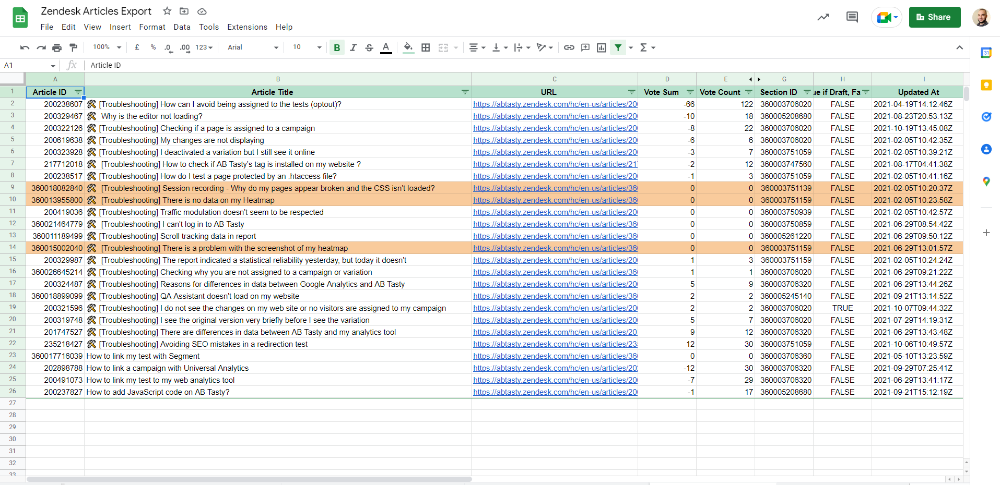
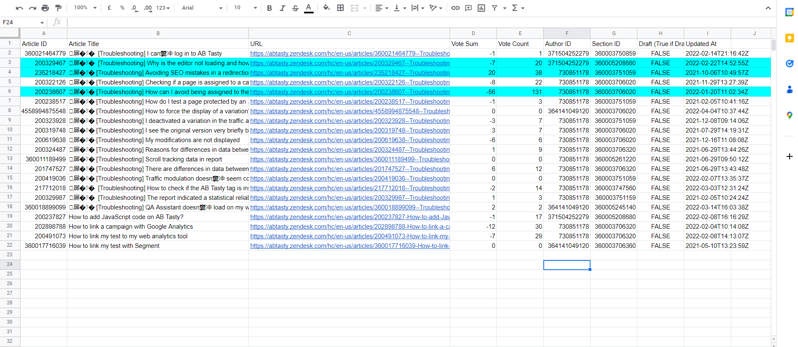

Ce projet consitait à remettre à jour la Knowledge Base client sur tous les articles de Troubleshooting
Avant : Novembre 2021
On peut voir dans la colonne "Vote Sum" que la plupart des articles sont soit négatifs soit neutre en terme d'appréciation.
Après : Mars 2022
Pour nous organiser, nous utilisons Trello

Nous utilisions le board Trello de l'équipe Produit avec qui nous travaillions conjointement, nous sur la partie article Troubleshooting et eux sur les autres.
Le fonctionnement est simple : La correction est soumise dans "New", passe en "Under Review" lorsque l'équipe produit valide les changements initiaux, l'article est ensuite corrigé par une traductrice dans "On going", et placé dans "Ready to prod" lorsqu'il est prêt a passer en production.

Voici un exemple de carte Trello